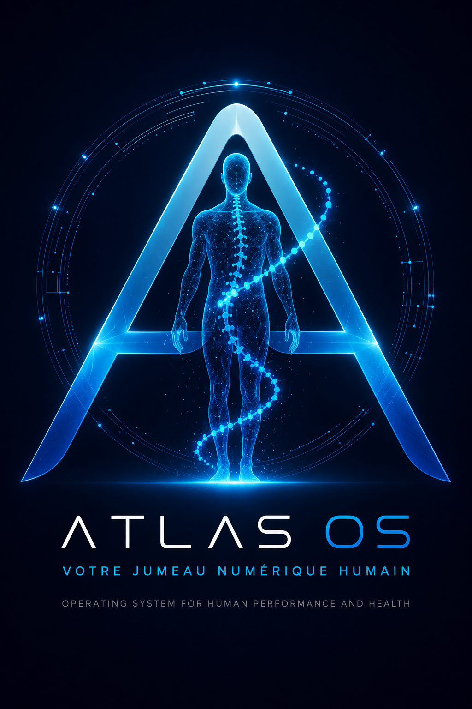
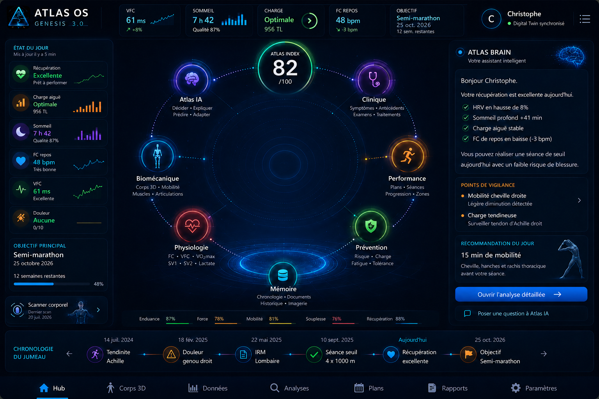

Tournez votre téléphone horizontalement pour profiter du visuel complet.
ÉTAPE 1 SUR 5
Choisissez votre avatar
Il deviendra votre Jumeau Numérique dans tous les moteurs Atlas.
Sélectionnez Homme ou Femme.

AGENT SPÉCIALISÉ ATLAS
Module
Contenu du module.